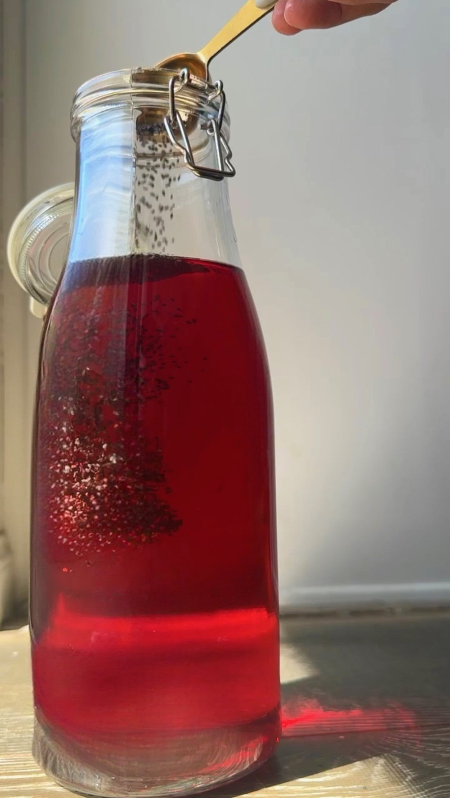

Strawberry Chia Seed Tea

HOW TO MAKE STRAWBERRY CHIA SEED TEA
- Boil the Water: Start by bringing a pot of water to a boil on your stove.
- Steep the Tea: Once the water has boiled, turn off the heat and place the tea bags in the hot water. Allow them to steep for about 5 minutes, or follow the steeping instructions on the package for the best flavor.
- Cool the Tea: After steeping, remove the tea bags and let the tea cool to room temperature. This step can take about 2 hours, but it’s important to let the tea cool properly to prevent the chia seeds from clumping.
- Prepare the Chia Seeds: Transfer the cooled tea to a pitcher. Add the chia seeds and stir vigorously.
- Chill the Tea: Place the pitcher in the fridge and let it chill until it’s cold. The chia seeds will expand!
- Add Strawberries and Sweetener: Just before serving, stir in the chopped strawberries and your choice of sweetener, like honey or maple syrup.
- Serve and Store: Serve your Strawberry Chia Tea over ice for an extra-refreshing experience. Store any leftovers in the fridge for up to 2-3 days.

KEY INGREDIENTS
- Tea bags: A light or floral tea works best. See my notes below on alternatives to tea bags and a list of plastic-free teas. THIS is the one I used. It’s delicious!
- Chia seeds: A naturally good source of fiber, protein, and omega-3s!
- Honey or maple syrup: Optional, to taste.
- Strawberries: Because this is strawberry chia seed tea after all!